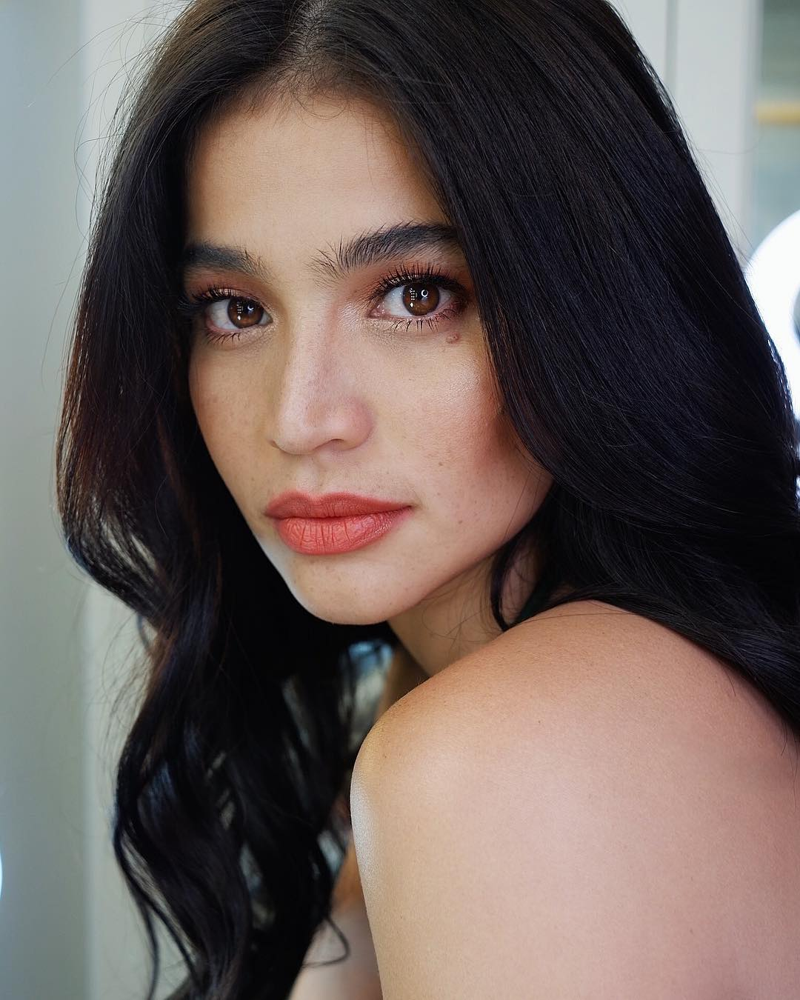
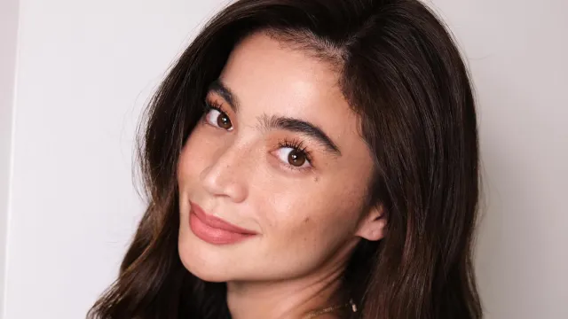

Anne Curtis-Smith
a Filipino-Australian actress, model, television host, entrepreneur and recording artist.[2] Dubbed as the "Multimedia Superstar", she is recognized as one of the most successful celebrities of the 21st century in the Philippines. As of the writing, she is the first Filipina celebrity to reach the 20th million mark on Instagram, amassing millions on other social media as well.[3][4][5][6]
Curtis has received numerous accolades throughout her career, including two FAMAS Awards, a Luna Award, two Metro Manila Film Festival Awards, and five PMPC Star Awards for Television. Additionally, she has also been nominated for two Gawad Urian Awards, and eight PMPC Star Awards for Movies.[7] Regarded as one of the most influential celebrities in the Philippines,[8] Forbes Asia named her as one of the top 100 digital stars in the Asia-Pacific region.[9] As of 2021, she remains as the Philippines' top Instagram personality with over 17 million followers,[8][10] and is also the 4th most followed Filipino celebrity on Facebook with over 18 million followers.[11] She was also the first Filipino to reach 14 million followers on Twitter, and is currently the second most followed Filipino celebrity on the platform.[12][13][14] Elsewhere, Curtis was also the number one Instagram influencer in United Arab Emirates (UAE).[15]
Curtis has also starred in several films, including the box-office hits Baler (2008), No Other Woman (2011), A Secret Affair (2012), The Gifted (2014), Sid & Aya: Not a Love Story (2018), and The Mall, The Merrier (2019).[16] She is the third highest grossing Filipino actress (9th overall) of the 2010s decade with her films grossing over Php 1.5 billion in box-office receipts.[17] Furthermore, she has since starred in several hit television series, including Hiram (2004–2005), Kampanerang Kuba (2005), Maging Sino Ka Man (2006–2007), Dyosa (2008), Green Rose (2011) and Kailangan Ko'y Ikaw (2013). In 2014, she portrayed the iconic Komiks character Dyesebel in Mars Ravelo's Dyesebel. She is also one of the main host of the noontime variety show It's Showtime (2009–2020, 2022–present).
Read More
Early life
Anne Ojales Curtis-Smith[18] was born in Yarrawonga, Victoria, Australia, the daughter of Carmencita Ojales, a Filipino from Bolinao, Pangasinan and James Ernest Curtis-Smith, an Australian lawyer.[19] Her father married Ojales in 1982.[20] Her younger sister, Jasmine, is also an actress. On their father's side, they had a half-sister named Clare who died in 2007 due to a cardiovascular disease at four months old.[21]
In 1997, at the age of 12, Curtis, who is half-Filipino, visited her mother's relatives in the Philippines with her family. During this trip, a talent scout approached her, inviting her to enter a children's beauty pageant. Despite initial skepticism from her father, Curtis, with her mother's support, decided to explore opportunities in the entertainment industry. Without her father's knowledge, she began attending various talent agencies. Eventually, the family made the decision to stay permanently in the Philippines. At the time, Curtis faced the challenge of not being able to speak or understand the Filipino language, prompting her to enroll in language classes.[1]
Read More

Career | 1997–2004: Early works
In 1997, Curtis had her film debut in Magic Kingdom: Ang Alamat ng Damortis. Afterwards, she signed with Viva Films and GMA Network. Her first television appearance was in the drama series, Ikaw na Sana. She was also part of the teen-oriented show, T.G.I.S..[22]
From 1998 to 2003, Curtis had a string of minor and supporting roles in films such as Honey, My Love... So Sweet, Ika-13 Kapitulo, Juan & Ted: Wanted and in television shows May Bukas Pa, Beh Bote Nga, Anna Karenina, and Idol Ko si Kap.[1]
2004–2010
In 2004, Curtis moved from GMA Network to ABS-CBN, stating the move "majorly life changing."[23] Her first project with the network was the drama, Hiram, starring Dina Bonnevie and Kris Aquino.[24] Aside from Hiram, Curtis also joined ASAP as a host and as a performer.[citation needed]
Curtis' big break came in 2005, when she played the title role in the fantasy television series Kampanerang Kuba. This marked her first collaboration with director Wenn V. Deramas.[23][25] Curtis then hosted the reality show Qpids with Luis Manzano,[26] and a segment in the talk show, The Buzz called Wanna Buzz.[27]
In 2006, Curtis joined Luis Manzano as hosts of the second kids season of the reality talent competition, Star Circle Quest.[28] That same year, she starred in the romantic drama All About Love, where she co-starred with John Lloyd Cruz, Bea Alonzo, Luis Manzano, Angelica Panganiban and Jason Abalos,[28] as well as the supernatural horror film, Wag Kang Lilingon with Kristine Hermosa.[29] She portrayed Celine Magsaysay in the drama series Maging Sino Ka Man. She received acclaim for her performance in the series,[30] and received her first acting nomination at the PMPC Star Awards for TV for Best Drama Actress.[31]
In 2007, Curtis reunited with Wenn V. Deramas for the comedy film, Ang Cute Ng Ina Mo.[32] She also co-starred with Oyo Boy Sotto in Sineserye Presents: May Minamahal,[33] and reprised her role of in the second installment of Maging Sino Ka Man, entitled Maging Sino Ka Man: Ang Pagbabalik.[34] Earlier in the year, Curtis also became a video jockey for MTV Philippines.[35]
In 2008, Curtis starred in two romantic dramas; When Love Begins, alongside Aga Muhlach,[36] and the 34th Metro Manila Film Festival official entry, Baler, with Jericho Rosales.[37] For her performance in the latter, she won the Metro Manila Film Festival Award for Best Actress.[38] This marked Curtis' first acting award.[39] She also received Best Actress nominations at the 57th FAMAS Awards,[40] 25th PMPC Star Awards for Movies,[41] 11th Gawad PASADO Awards,[42] and a 27th Luna Awards. Also in 2008, Curtis top-billed the fantasy television series Dyosa, where she played four different characters.[43] Because of the role, she was dubbed as the "Dyosa" of Philippine Show business.[44]
In 2009, Curtis became one of the main hosts of the morning competition program, Showtime! alongside Vhong Navarro, Kim Atienza, and Vice Ganda,[45] and starred in the romantic comedy television series, The Wedding, with Zanjoe Marudo and Derek Ramsay.[46] For her work in Showtime!, she and her co-hosts received a nomination for Best Talent Search Program Host at the 24th PMPC Star Awards for TV.
In 2010, Curtis starred in the romantic comedy film Babe, I Love You. The movie marked her first big-screen team-up with Sam Milby.[47] She also starred in the romantic drama film In Your Eyes, alongside Claudine Barretto and Richard Gutierrez.[48] Her role in the film earned her an award for Best Supporting Actress at the 29th Luna Awards,[49] and a Movie Actress of the Year nomination at the 27th PMPC Star Awards for Movies.[50]
Read More
.jpg)